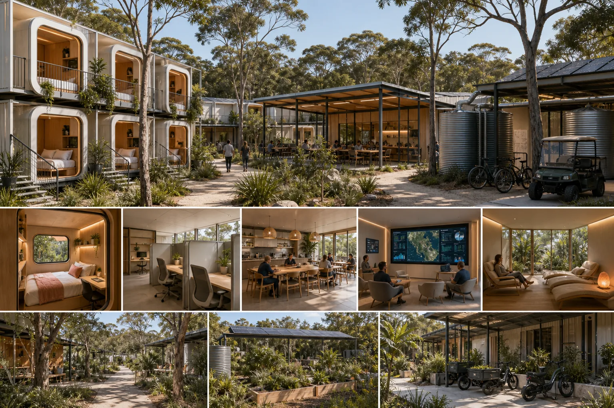

Disaster kiosk layer
Input public screens, venue TVs, rugged nodes and source dates. Output a readiness scene with emergency info clearly source-labelled.
Open disaster kiosksLevel 1 (L1) is the shared middle: a street, venue, co-op room, public screen, maker shed, market, ferry gateway, kiosk or local crew. Add the context you choose, then render and customise the place.

Input public screens, venue TVs, rugged nodes and source dates. Output a readiness scene with emergency info clearly source-labelled.
Open disaster kiosks
Input beds, local compute, health-surge logistics and rehearsal goals. Output a simulation without locking into a site too early.
Open capsule lab
Input tool sharing, repairs, sand experiments, material loops and contributors. Output a reviewed Level 1 (L1) world prompt.
Open maker-spaceKeep the Ballow Road sites separate. 9 Ballow gives a trust, media and co-working front desk scene. 10-12 Ballow gives a sloping ferry-gateway public-use simulation with QUAMPI, ferry traffic, sport, markets, screen culture and due diligence all in the room.
A possible early Ready S.E.T. Co-op trust room: co-working, training, media, help desk and public services if lease and fit-out make sense.
Open 9 Ballow pageInput public sport, screen, market, visitor and festival uses, plus slope, planning, current status and cultural context. Output a gateway simulation prompt.
Open 10-12 Ballow pageInput concept, option, live project, funded work or source reference. Output a prompt that labels the status clearly.
Name the group or person who wants to tune the generated scene before sharing it wider.
Notice, repair, training, shelter, event, health logistics, civic rehearsal, transport, food or media.
Maps, photos, opening hours, equipment, transport, power, weather, source links, local observations and style references.
Planning, cultural, legal, clinical, safety, insurance, owner, neighbour, venue or creative helpers.
Screen mock-up, grant visual, storyboard, playable route, source trail, public profile render, event scene or aggregate dashboard.
Surveillance aesthetic, stale visuals, dangerous instructions, private contacts, invented sign-off or site speculation.